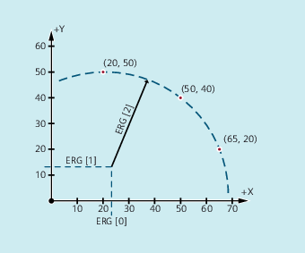

Mit CALCDAT können Sie aus drei oder vier bekannten Kreispunkten den Radius und die Kreismittelpunkt-Koordinaten berechnen. Die angegebenen Punkte müssen unterschiedlich sein.
Bei 4 Punkten, die nicht exakt auf dem Kreis liegen, wird für Kreismittelpunkt und Radius ein Mittelwert gebildet.
| Hinweis |
Rechenvorschrift zur MittelwertbildungDie Kreisbogenberechnung wird 4 x ausgeführt:
Die Kreismittelpunkt-Koordinaten Abszissenwert und Ordinatenwert werden berechnet, indem die Abszissenwerte bzw. Ordinatenwerte der vier Kreisbogenberechnungen addiert und durch 4 geteilt werden. Der Radius wird berechnet, indem die Wurzel aus der Summe der vier Radien der Kreisbogenberechnungen gebildet und das Ergebnis mit 0,5 multipliziert wird. |
| Vordefinierte Funktion zur Berechnung von Radius und Mittelpunkt-Koordinaten eines Kreises aus 3 oder 4 Punkten | ||||
| Variable für den Kreisberechnungsstatus | ||||
Typ: | BOOL | ||||
Wert: | TRUE | Die angegebenen Punkte liegen auf einem Kreis. | |||
FALSE | Die angegebenen Punkte liegen nicht auf einem Kreis. | ||||
| Variable zur Angabe der Kreispunkte | ||||
| Anzahl der Kreispunkte (3 oder 4) | ||||
| Art der Koordinatenangabe, | ||||
| Parameter für die Anzahl der zur Berechnung verwendeten Punkte (3 oder 4) | ||||
| Variable für Ergebnis: Angabe von Kreismittelpunkt-Koordinaten und Radius | ||||
0 | Kreismittelpunkt-Koordinate: Abszissenwert | ||||
1 | Kreismittelpunkt-Koordinate: Ordinatenwert | ||||
2 | Radius | ||||
| Hinweis |
Beachten Sie, dass die Variablen vor ihrer Verwendung definiert sein müssen. |
Von drei Punkten soll ermittelt werden, ob sie auf einem Kreisabschnitt liegen.
| Programmcode | Kommentar |
|---|---|
| N10 DEF REAL PKT[3,2]=(20,50,50,40,65,20) | ; Variable zur Angabe der Kreispunkte. |
| N20 DEF REAL ERG[3] | ; Variable für Ergebnis. |
| N30 DEF BOOL STATUS | ; Variable für Status. |
| N40 STATUS=CALCDAT(PKT,3,ERG) | ; Aufruf der ermittelten Kreisdaten. |
| N50 IF STATUS == FALSE GOTOF ERROR | ; Sprung zu Fehler. |